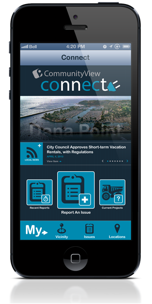
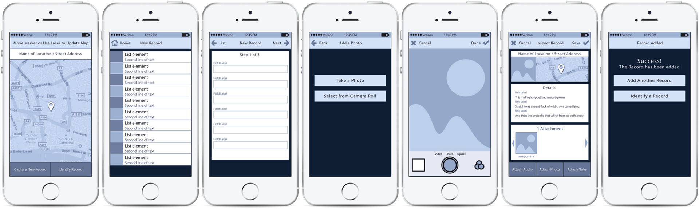
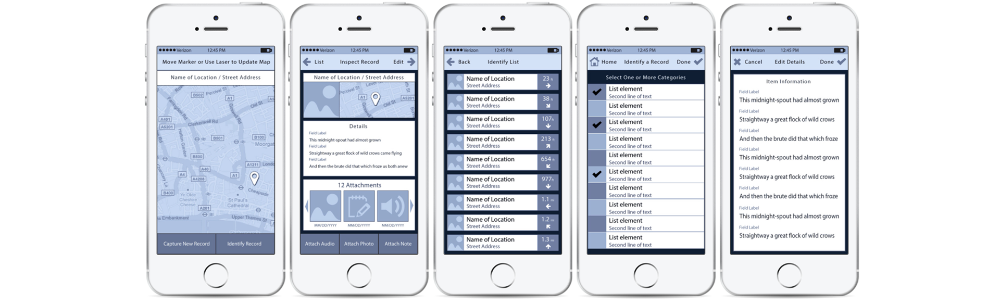
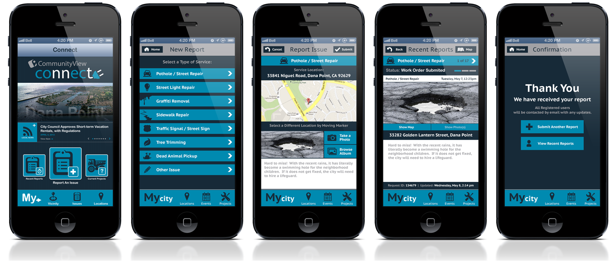
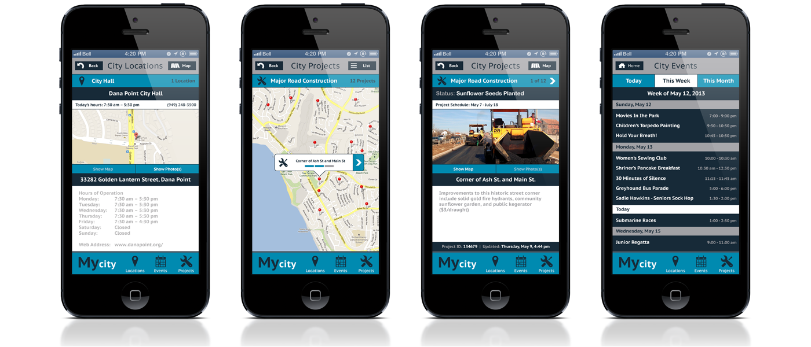

Community Engagement
CommunityView is a mobile application that enables communication between local governments and residents, allowing community members to submit and monitor neighborhood issues while working directly with city departments.

2013
Design Lead
Myself and a Lead Developer
The iOS Connect app was developed to provide city residents with news and information. This allowed them to keep up with the latest events and city meetings.
The application's primary workflow allowed residents to invest in their community by reporting and tracking issues around their city.
Initial wireframes were created with Photoshop and prototyped using the Marvel App.

Low-fidelity wireframes for "New Report" workflow

Low-fidelity wireframes for "View/Edit Reports" workflow
Final screens were created in Photoshop. Image assets and reference were provided to a lead developer for assembly using XCode and PhoneGap.

Primary 'Issue Reporting' workflow
